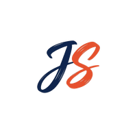

Johannes Schmidt
Leistungen
Portfolio
Über mich
Blog
Lebenslauf
Kontakt
Blog
Wissen
teilen
Tutorials, Einblicke und Erfahrungen aus der Praxis.
17. Nov 2023
Role Based Access Control with App Roles in Azure Static Web Apps
29. Jun 2023
Running Python Wheel Tasks in Custom Docker Containers in Databricks
23. Feb 2021
Train your own object detector with Faster-RCNN & PyTorch